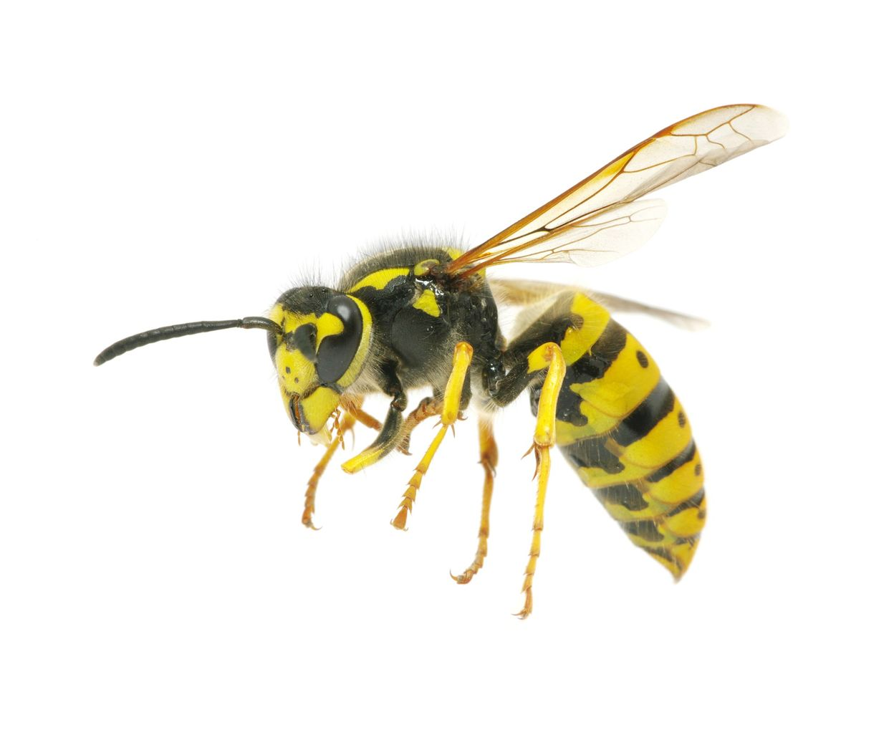
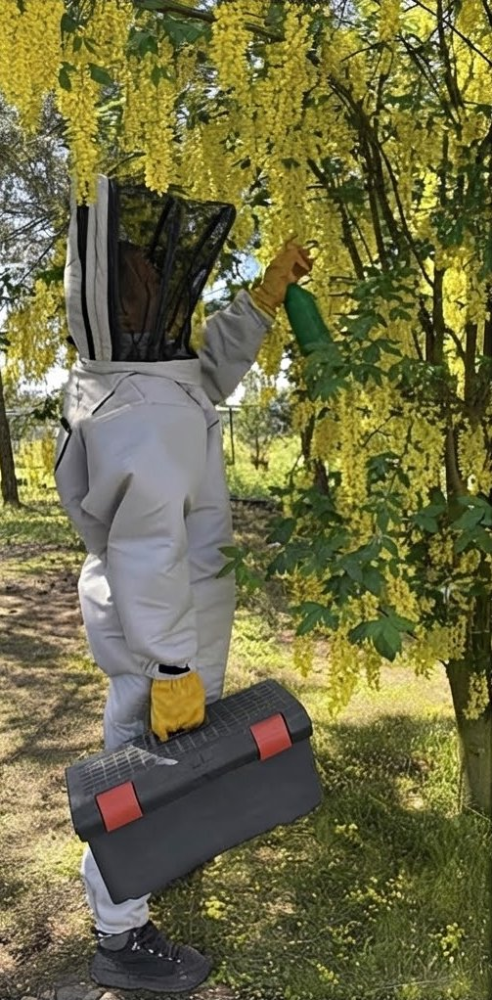
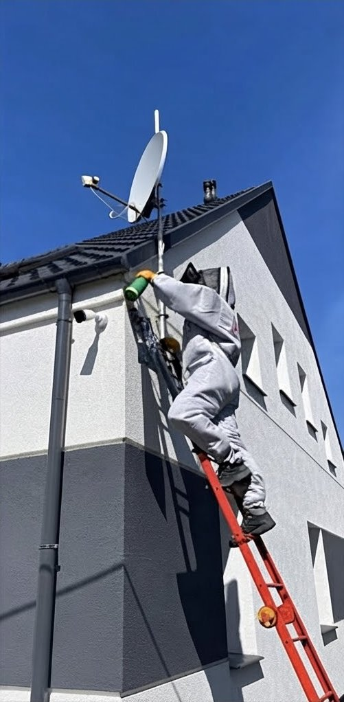
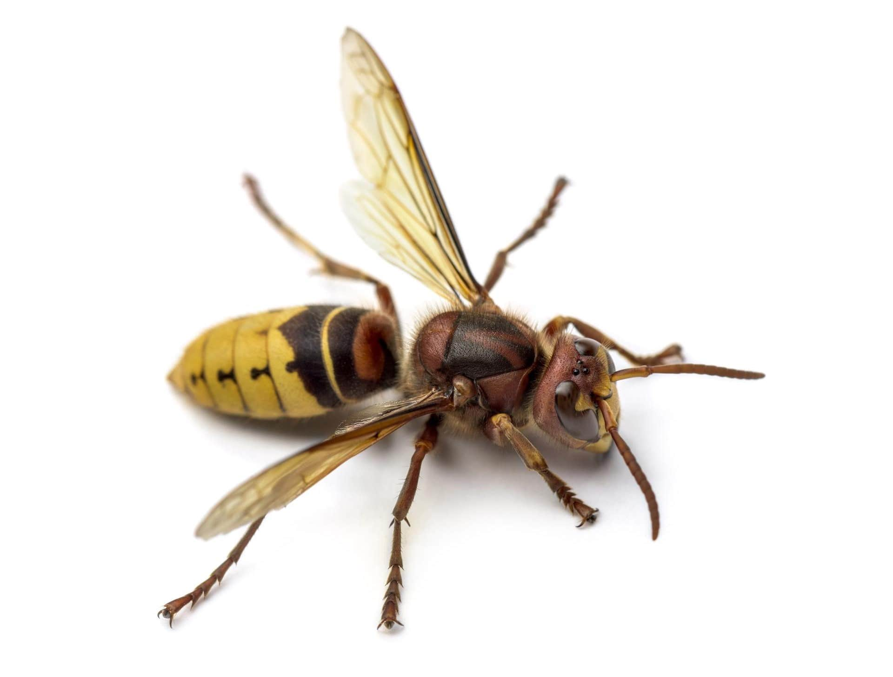
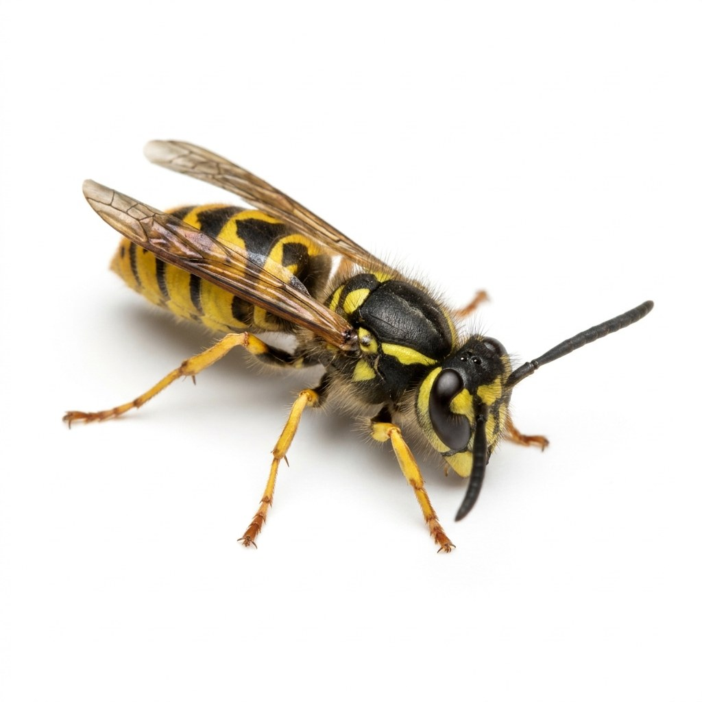
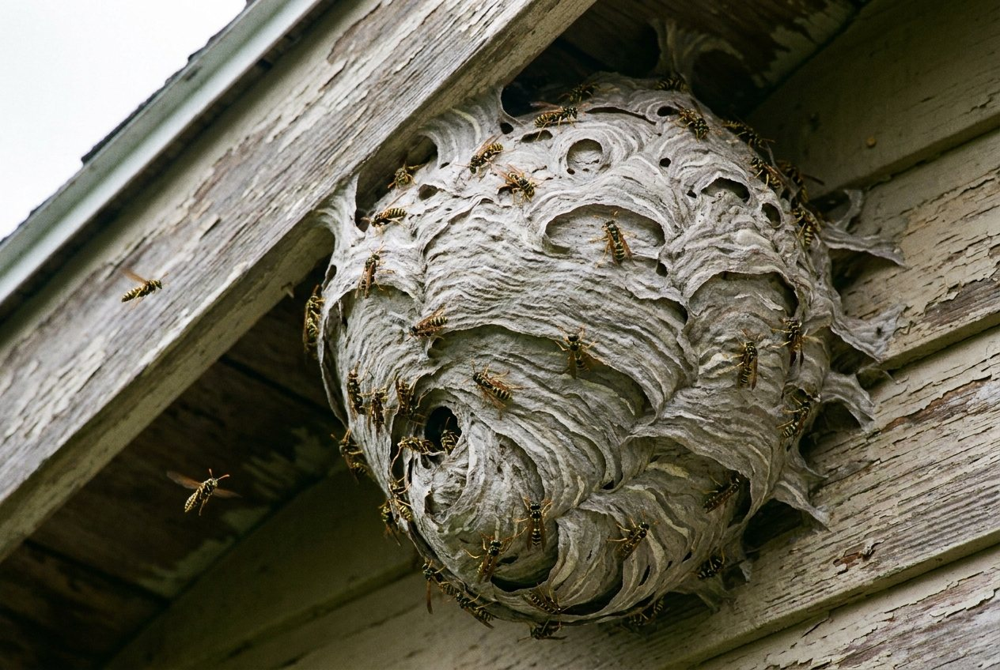

Osy
Gniazda pod dachem, w podbitce, roletach i elewacji.
Tarnowo Podgórne, Przeźmierowo, Lusowo, Poznań i okolice. Szybki dojazd, własny sprzęt, szybkie usunięcie gniazda.
697 206 649 zadzwoń lub wyślij SMSJak działam
Mówisz, gdzie jest gniazdo.
Nawet tego samego dnia.
Bezpiecznie likwiduję problem.
W razie potrzeby doradzam, co dalej.


Poznaj przeciwnika

Gniazda pod dachem, w podbitce, roletach i elewacji.

Większe, głośniejsze i bardziej niebezpieczne.

Ukryte w ziemi — łatwo je nadepnąć.

Dlaczego to pilne
Im dłużej czekasz, tym większe gniazdo i większe ryzyko użądlenia.
Jedna cena, zero ukrytych kosztów
Szybki dojazd · Konkretna usługa · Bezpieczne usunięcie gniazda
Zadzwoń / SMS — usunę gniazdo
Najlepiej telefonicznie. Powiedz, gdzie znajduje się gniazdo i w jakiej miejscowości mam podjechać.
Pytania
Cennik: 300 zł za likwidację jednego gniazda + dojazd 50 zł — tak samo w Poznaniu, Tarnowie Podgórnym, Przeźmierowie i Lusowie.
Często jeszcze tego samego dnia. Termin podaję od razu przez telefon: 697 206 649.
Tak — osy, szerszenie i osy ziemne. Nie usuwam trzmieli (w Polsce są pod ochroną).
Tak. Zajmuję się zwalczaniem os i szerszeni — usuwam gniazda w podbitce, pod dachem, w elewacji, roletach i rynnach, na strychu, na balkonie i w ziemi. Przyjeżdżam z własną drabiną i sprzętem.
Najbezpieczniej zlecić to osobie z kombinezonem ochronnym i odpowiednimi środkami. Przyjeżdżam, neutralizuję gniazdo pianą lub opryskiem, zdejmuję je i zabieram ze sobą.
OsaStop — tel. 697 206 649. Usuwam gniazda os i szerszeni w Poznaniu, Tarnowie Podgórnym, Przeźmierowie, Lusowie i całym powiecie poznańskim.
Zwykle tylko wtedy, gdy gniazdo bezpośrednio zagraża życiu lub zdrowiu. Przy domach i ogrodach najczęściej odsyła do prywatnych firm — wtedy zadzwoń: 697 206 649.
Poznań, Tarnowo Podgórne, Przeźmierowo, Lusowo, Lusówko, Baranowo, Sady, Swadzim, Jankowice, Wysogotowo i inne miejscowości powiatu poznańskiego (Wielkopolska). Dojazd kosztuje 50 zł.